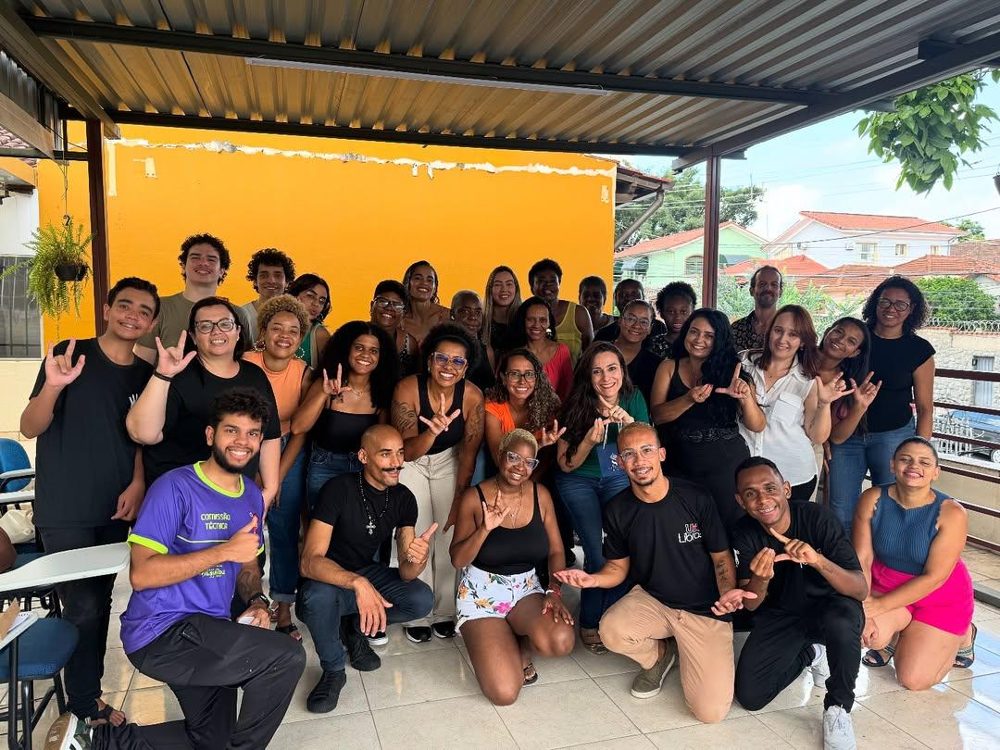

Basico 1
Ideal para quem nunca teve contato com Libras e quer começar do zero.

Na UAI Libras, entendemos que aprender Libras vai muito além da comunicação — é um compromisso com a inclusão, com a valorização da comunidade surda e com a construção de uma sociedade mais acessível. Por isso, estruturamos nossos cursos de forma progressiva, respeitando o tempo, o objetivo e a realidade de cada aluno. Cada etapa da formação foi cuidadosamente planejada para oferecer uma experiência transformadora, aliando qualidade técnica, abordagem humanizada, diversão e forte conexão com o mercado de trabalho.
Ideal para quem nunca teve contato com Libras e quer começar do zero.
Para quem já conhece o básico e quer se comunicar com mais segurança.
Para quem deseja fluência, atuar como intérprete ou aprofundar seus estudos.
Para quem deseja formação e aprofundar seus estudos.
Entre em contato com a gente pelo WhatsApp: (031) 91479896
Não! O curso Iniciante é feito para quem nunca teve contato com Libras.
Sim, todos os cursos oferecem certificado digital após a conclusão.
Você pode tirar dúvidas diretamente com os professores pelo portal do aluno.